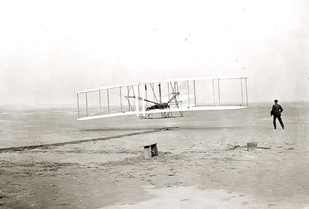
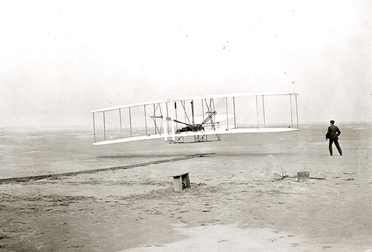

Flying Story
In ancient times people didn’t know how to fly.
(geçmiş zamanlarda insanlar nasıl uçacaklarını bilmiyorlarmış)
They made wings.
(kanat yapmışlar)
They attached the wings to their shoulders.
(kanatları omuzlarına tutturmuşlar.)
They climbed mountains.
(dağlara tırmanmışlar)
They tried to fly but they didn’t suceed.
(uçmaya çalışmışlar)(başaramamışlar.)
They failed.
(başarısız olmuşlar.)
So they gave up flying with wings.
(bu yüzden kanatlarla uçmaktan vazgeçmişler.)
They tried something else.They made a balloon.
(başka bir şeyi denemişler.)(balon yapmışlar.)
They made fire under the balloon.
(balonun altına ateş yakmışlar.)
They heated the air in the baloon.
(balonun içindeki havayı ısıttılar.)
They attached a basket under the balloon.
(balonun altına sepet tutturdular.)
They put three animals in the basket.
(sepete 3 hayvan koydular.)
They tied the basket to the ground with a rope.
(sepeti iple yere bağladılar.)
The first balloon flew up.
(ilk balon uçtu.)
They made another balloon.
(başka bir balon yaptılar.)
They made fire under the balloon.
(balonun altında ateş yaktılar.)
They heated the air in the baloon.
(balonun içindeki havayı ısıttılar.)
They attached a basket under the balloon.
(balonun altına sepet tutturdular.)
They put two men in the basket.
(sepete 2 adam koydular.)
They tied the basket to the ground with a rope.
(sepeti yere bağladılar.)
The second balloon flew up.
(2.balon uçtu)
They made another balloon.
(bir başka balon yaptılar.)
They made a fire under the balloon.
(balonun altında ateş yaktılar.)
They heated the air in the baloon.
(balonun içindeki havayı ısıttılar.)
They attached a basket under the balloon.
(balonun altına sepeti tutturdular.)
They put two men in the basket.
(sepetin içine 2 adam koydular.)
But this time they didn’t tie the basket to the ground with a rope.
(ama bu kez sepeti yere bağlamadılar.)
The third balloon flew up.They made diffirent balloons.
(3.balon uçtu)(farklı balonlar yaptılar.)
They put hydrogen in the balloons.
(balonların içine hidrojen koydular.)
Hydrogen is a dangerous gas.
(hidrojen zararlı bir gazdır.)
Some balloons exploded.
(bazı balonlar patladılar.)
Some people were killed.
(bazı insanlar öldüler.)
Some people were injured.
(bazıları yaralandılar.)
So they gave up flyig in a balloon.
(balonla uçmayı bıraktılar.)
In 1903 the Wright brothers made a glider in America.
(1903’te wrigtht kardeşler America’da bir planör yaptılar.)
They made a small engine.
(küçük bir motor yaptılar.)
They put the small engine in the glider.
(bu küçük motoru planörün içine koydular.)
The first plane flew up.The Wright brothers became famous.
(ilk uçak uçtu.)(Wright kardeşler ünlü oldular.)
Nowadays there are modern aeroplanes.
(bu günlerde modern uçaklar var.)
They carry cargo and passengers from one continent to another.
(bir kıtadan diğer kıtaya kargo ve yolcu taşırlar.)
From Asia to Europe.From America to Africa.
(asyadan avrupaya)(amerikadan afrikaya)
From Australia to Antartica.
(avustralyadan antartikaya)
They carry cargo and passengers from one country to another.
(bir ülkeden başka ülkeye kargo ve yolcu taşırlar.)
From Turkey to China.From Japan to Germany.
(Türkiyeden çine)(japonyadan almanyaya)
From France to Russia.From Saudi Arabia to Italy.
(fransadan rusyaya)(sudi arabistandan italyaya)
From Korea to Greece.From Switzerland to Swiss.
(koreden yunanistana)(isviçreden isveç’e)
From Iran to Irak.From Spain to England.
(irandan ırak’a)(ispanyadan ingiltereye)
 
